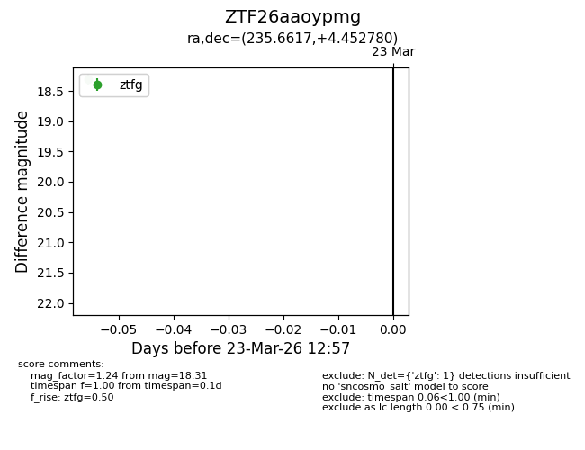
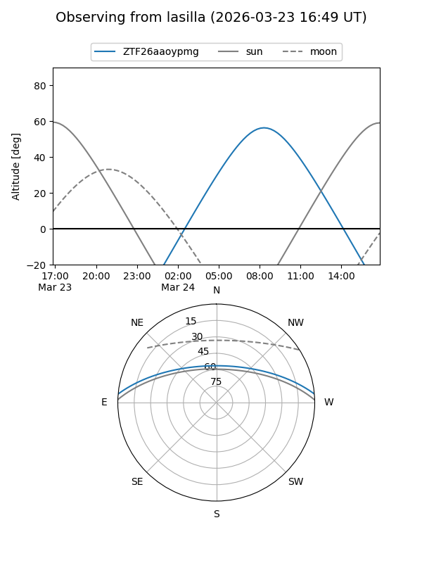
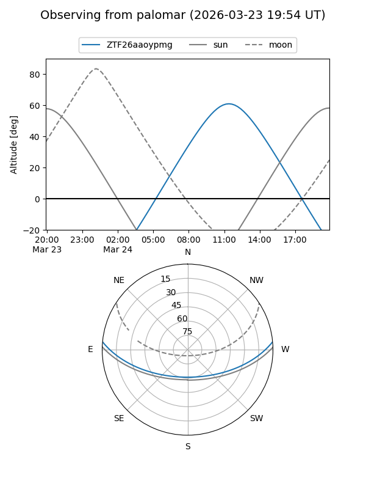

ZTF26aaoypmg
Target ZTF26aaoypmg at 2026-03-23 12:59
Aliases and brokers:
FINK: link
Lasair: link
ALeRCE: link
alt names
ZTF26aaoypmg (ztf,fink_ztf)
Coordinates:
equatorial (ra, dec) = 235.6617,+4.45278
equatorial (HMS+DMS) = 15:42:38.81,+04:27:10.01
galactic (l, b) = (11.6072,+43.34722)
Flags:
Photometry:
last ztfg=18.31
1 ztfg detections
Lightcurve

Visibility


Additional plots